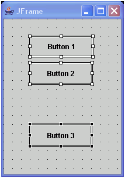
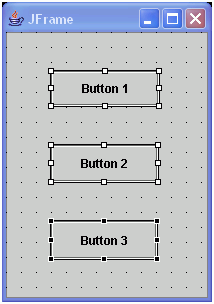
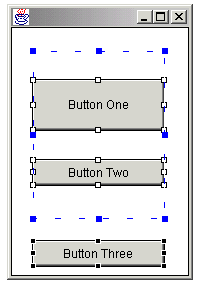
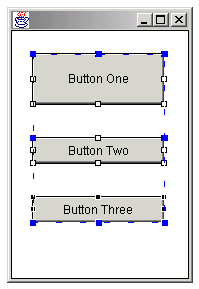
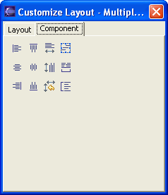

When you set the layout manager to null, you can use the Customize Layout window to align components based on their bounds.
With layout set to null, each component is independently placed and sized on the user interface based on its bounds. To avoid the tedious and error-prone task of individually updating each component's bounds, you can use the visual editor to align and adjust the sizes and placement of components based on relationships.
- Align components based on edges
- Align components based on center points
- Make components the same width and height
- Distribute components evenly, both vertically and horizontally, across a given space
For example, you can select three JButton components and specify that they should be the same width and aligned with each other on the left bound. The last selected JButton is used as the anchor, or control, for the other two buttons. The Align left action aligns the JButtons with the left edge of the last selected JButton, and the Match width action makes the selected JButtons the same width as the control JButton.
The alignment buttons on the Customize Layout window are only enabled if the following conditions are true:
- Two or more components are selected, and the parent containers have no layout manager (null).
- The components have no parent and have been placed on the Design view directly.
In addition to aligning components and matching width and height, you can distribute components. When components are distributed, their positions are changed so that they are evenly spaced within a bounding box defined by their parent container. For example, the Distribute vertical button will arrange the following controls so that they have the same spacing:
 By clicking Distribute vertical, it will look like this:

Notice that the three buttons are distributed within the height of the parent (the frame's top and bottom edge).
To allow for more control over the area used for the distribution, you can enable the distribute box with the alignment window button . This will show a box drawn around the area of all the selected components, which can be moved and resized using its handles. When a 'distribute' occurs and the box is active, the area that is divided up to reposition the controls will be the distribute box, rather than the parent container.

The
box can be moved and resized

and vertical distribute is now within this box.

To align, resize, and distribute components in null layout:
- In the Design view or Java Beans view, select two or more components that you want to align or adjust in relation to each other. You can use the marquee selection tool or hold the Ctrl key to select multiple components. The last component that you select is the control component, or anchor. The anchor component is indicated by black resize handles, while the other selected components have white handles.
- Do one of the following to open the Customize Layout window:
- Right-click and select Customize Layout from the pop-up menu.
- Click the Customize Layout toolbar button.
 - To align the components with each other, use the following buttons:
- Align left - aligns the components with the left edge of the anchor component.
- Align center - aligns the components with the center of the anchor component along a vertical plane.
- Align right - aligns the components with the right edge of the anchor component.
- Align top - aligns the components with the top edge of the anchor component.
- Align middle - aligns the components with the middle of the anchor component along a horizontal plane.
- Align bottom - aligns the components with the bottom edge of the anchor component.
- To adjust the size of the selected components, use the following
buttons:
- Match width - makes the components the same width as the anchor component.
- Match height - makes the components the same height as the anchor component.
- To distribute the spacing of the components, first do one of the
following to specify the bounds of the distribution area:
- Click nothing to use the container as the distribution area (this is the default behavior), or click Hide distribute box if the box is already showing.
- Click the Show distribute box and drag the handles of the box to create the desired size for your distribution.
- Distribute horizontally - makes the components the same width as the anchor component.
- Distribute vertically - makes the components the same height as the anchor component.